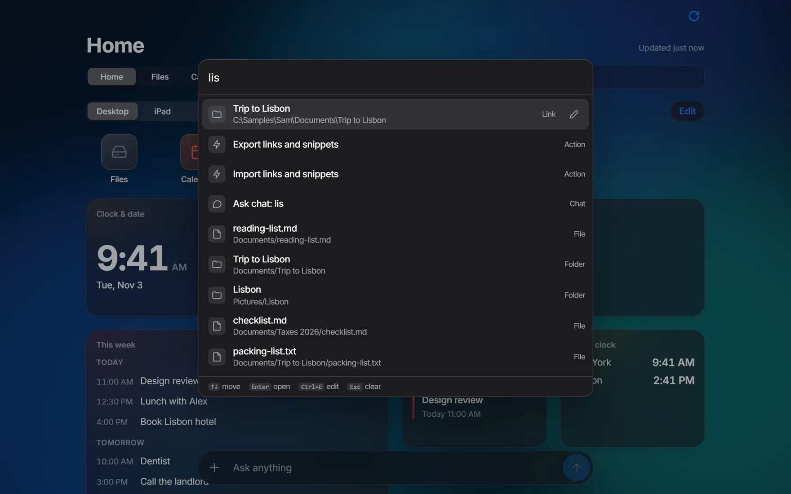

Search and the launcher
One bar for everything. Type, and links, snippets, files, tabs and actions all answer in one list.

Two ways to open it
- Ctrl K inside LocalHub
- Opens the search bar over the page you’re on.
- Ctrl Alt Space anywhere in Windows
- Opens the launcher: the same bar in its own small window, on the monitor your cursor is on. It stays on top until you press Esc, click away or press the keys again.
The launcher comes with the desktop app and only works while LocalHub is running. To have it ready after a restart, click the tray icon and turn on Start at login. It’s off until you do.
What it finds
- Your links and snippets. See Links and snippets.
- Your tabs. Pick one to go there.
- Files in your home folder, once you’ve typed two characters.
- Actions: add a link, add a snippet, export or import links and snippets, Edit Style, Edit Tabs and refresh this page’s numbers.
- Ask chat. Whatever you typed also gets a row that sends it to the assistant as a question.
What you use most and what you used last come first.
Edit Style, Edit Tabs and refresh only appear in the main window. In the launcher, importing, exporting and asking chat hand over to the main window.
Keys
- Up Down
- Move through the list.
- Enter
- Opens a link, tab or file. Copies a snippet.
- Ctrl E
- Edits the selected link or snippet.
- Esc
- Clears what you typed, then closes the bar.
Use different keys for the launcher
- Click the tray icon by the clock and choose Settings.
- Click in the Launcher hotkey box and press the keys you want.
- Choose Save.
If those keys are taken, the app says so and keeps the ones that were working.